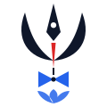
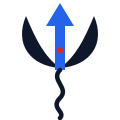

Trishul Classic — closest to your reference: trishul, third eye, red namam, damru, lotus

FINSURFLotus Wave — lotus petals over water; calm, "surfing" feel, no trident
Trident Wave — trident whose centre prong is a rising arrow, wave stem

FINSURFApp Icon — dark gradient badge for favicon / mobile / PWA
Sacred Seal — circular emblem: trident + rising trend line + wave